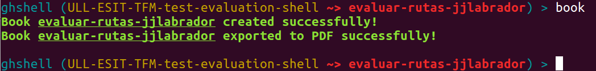
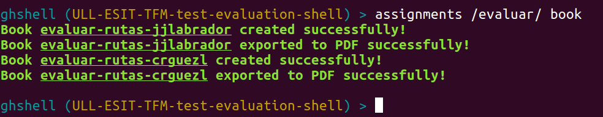
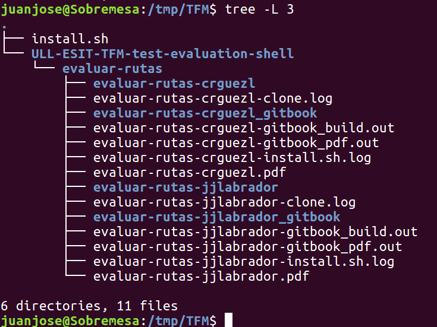
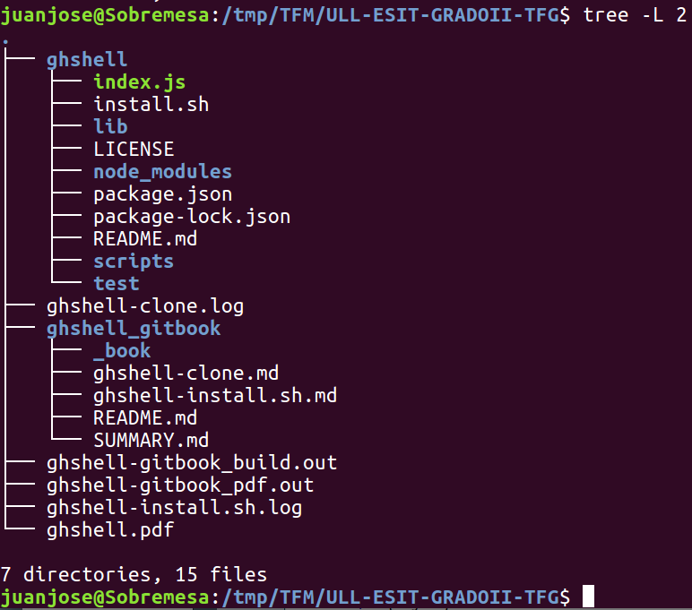
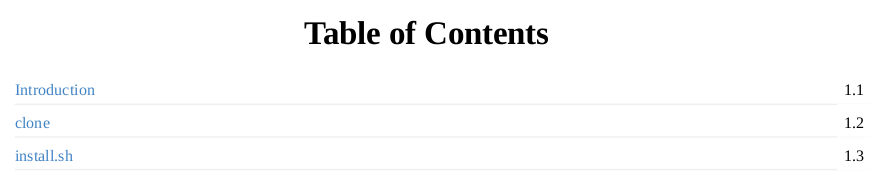
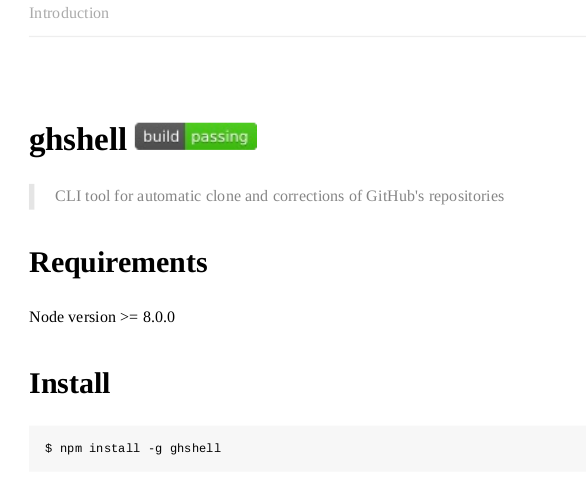
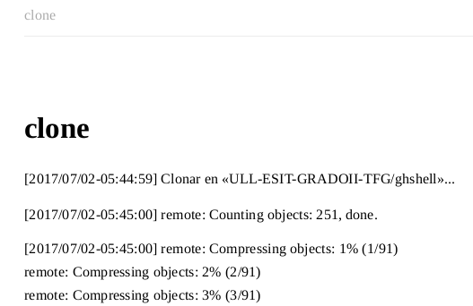
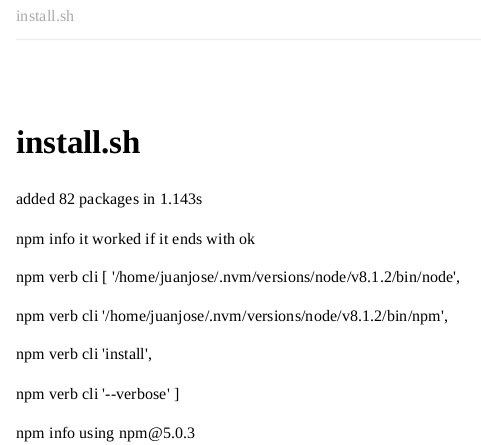

Recopilar la información obtenida de la automatización de tareas
Una vez ejecutados los scripts necesarios para evaluar un determinado repositorio, es posible generar un GitBook con el resultado de la ejecución de los mismos. Este libro se genera en formato PDF y en HTML.
En función del contexto dónde nos encontremos dentro de la herramienta, podremos:
- Crear un GitBook en el repositorio en el que nos encontremos.
- Crear un GitBook en un determinado repositorio.
- Crear un GitBook en todos los repositorios que coincidan con una determinada expresión regular.
- Crear un GitBook en todos los repositorios de una asignación coincidan con una determinada expresión regular.
Figura:
Creación del Gitbook en el repositorio actual
|

|
Figura:
Creación del Gitbook en asignaciones que coinciden con una expresión regular
|

|
Se puede observar el progreso de la creación del libro revisando los ficheros de logs que se generan: <nombre-repositorio>-gitbook_build.out y <nombre-repositorio>-gitbook_pdf.out.
Tanto el PDF como el HTML, contarán con las siguientes páginas:
- Índice (Tabla de contenidos).
- Introducción: en esta página se copiará el fichero README.md del repositorio. En caso de que no tuviera ese fichero, se imprimirá un mensaje que indica que el repositorio no tiene fichero README.md.
- Páginas correspondientes a la ejecución de cada script.
Figura:
Resultado de la creación del Gitbook
|

|
La carpeta que contiene el libro en HTML se llamará:
<nombre-repositorio>_gitbook/_book.
Figura:
Localización del HTML del Gitbook
|

|
El fichero PDF que se genera se llamará <nombre-repositorio>.pdf.
Figura 3.21:
Indice del PDF generado
|

|
Figura:
Introducción del PDF generado
|

|
Figura 3.23:
Resultado del clonado del repositorio
|

|
Figura:
Resultado de la ejecución del script en el repositorio
|

|
Juan José
2017-07-04